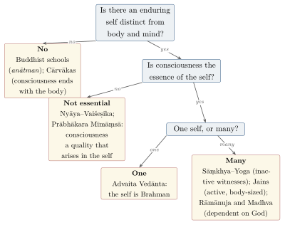

Chapter 4: Self and Knowledge: The Great Debates Compared¶
sa eṣa neti nety ātmā | agṛhyo na hi gṛhyate
This self is “not this, not this”. It cannot be grasped, for it is not grasped.
— Bṛhadāraṇyaka Upaniṣad 3.9.26
4.1 The Questions Indian Schools Argued Most¶
The two preceding chapters compared pictures of the world. The questions on which Indian thinkers argued with one another most closely, however, were not about the shape of the cosmos but about the one who knows it and the means by which anything is known. Is there a self, and if so, what kind of thing is it? Is consciousness its essence or a quality it sometimes has? How many selves are there? And by what means — perception, inference, the word of a reliable person, scripture — can we come to know anything at all, including the self? Every school had to answer these questions, and its answers decided much else: what liberation could mean, how karma could work without or with a self (Chapter 6), and whether scripture could be a source of knowledge (Chapter 3, on the debate about a creator). This chapter sets the main answers side by side. The schools themselves are treated in Volume 3 (Darśana Darpaṇa) and the Upaniṣads in Volume 2.
Two cautions apply. The positions summarised here were refined over many centuries, and each school contained rival views; a name such as “Nyāya” stands for a long argument, not a single doctrine. And the comparison is made in a modern vocabulary — “self”, “consciousness”, “knowledge” — whose fit with ātman, caitanya and pramā is itself one of the things to be examined.
4.2 The Self in the Upaniṣads¶
The early Upaniṣads seek the self (ātman) as the inner reality of the person. In the Bṛhadāraṇyaka, Yājñavalkya describes it as the seer that is not seen and the knower that is not known, and characterises it only negatively, in the words quoted at the head of this chapter. The Chāndogya’s teaching “that is how you are” (tat tvam asi) identifies it with the finest essence of all things, and the Kaṭha pictures it as the rider in the chariot of the body (Olivelle 1998). These texts do not yet offer a theory with defined terms; they offer images and dialogues that later schools would read in very different ways. Their lasting legacy is the thought that the self is not one object among others, because it is that to which objects appear.
4.3 Many Answers: The Schools on the Self¶
4.3.1 Vedānta¶
For Advaita Vedānta the self is pure consciousness, self-luminous and without parts, and it is identical with Brahman; the individual person, with a body, a mind and a history, is an appearance produced by ignorance (Chapter 9). Śaṅkara argued that the self cannot coherently be doubted, since whoever denies it is the self that denies. The theistic Vedāntas rejected the identity. For Rāmānuja the self is a real knower, essentially conscious and also an agent, and there are innumerable such selves, each forming part of the “body” of God; for Madhva selves are eternally distinct from God and from one another (Carman 1974; Sharma 1962). The theistic schools also objected that a consciousness without anyone who is conscious — the Advaita self — is unintelligible: knowing, Rāmānuja argued, is always someone’s knowing of something.
4.3.2 Sāṃkhya and Yoga¶
Sāṃkhya and the Yoga of Patañjali held that there are many conscious selves (puruṣa), pure witnesses that neither act nor change, wholly distinct from matter (prakṛti), whose transformations include not only the body but also intellect, ego and mind (Chapter 2, Table 2.1) (Larson 1979). What we ordinarily call thinking and willing therefore belong, for Sāṃkhya, to matter; the self only witnesses them, and bondage is the confusion of the witness with what it witnesses. Liberation is isolation (kaivalya): the self’s recognition that it was never involved.
4.3.3 Nyāya and Vaiśeṣika¶
The realist schools of Nyāya and Vaiśeṣika held that selves are many, eternal and all-pervading substances, but that consciousness is not their essence. It is a quality that arises in the self when the self is connected with a mind and a body, as colour arises in a pot when it is fired. The Nyāyasūtra (1.1.10) names desire, aversion, effort, pleasure, pain and cognition as the marks (liṅga) from which the self is inferred: such qualities need a bearer, and the body, which changes and decays, cannot be that bearer. In liberation the self is freed of all its specific qualities, including consciousness itself — a consequence that opponents mocked, saying that the Naiyāyika’s liberated self was no better than a stone, and that Naiyāyikas accepted as the price of a final end to pain.
4.3.4 Mīmāṃsā¶
The Mīmāṃsakas, as interpreters of the Vedic injunctions, needed a self that performs rituals in this life and enjoys their results in another. Both their schools accepted an enduring self distinct from the body. The followers of Prabhākara held that every cognition reveals three things at once — the object, the cognition itself and the self as its subject — so that the self is always known, but only as the knower, never as an object; the self in itself, between cognitions, is not conscious. Kumārila and his followers gave a different account, in which the self is grasped in the notion “I”. The debate between them is one of the most refined in Indian philosophy of mind.
4.3.5 The Cārvākas¶
The materialists denied a self distinct from the body altogether. Consciousness, they held, arises from the elements when they are combined in a living body, as an intoxicating power arises from ingredients that singly have none, and it ends when the body dies; there is therefore no rebirth and no fruit of action in another life. The Cārvāka texts are lost, and their views are known from the summaries of opponents, notably the first chapter of the Sarvadarśanasaṃgraha (Mādhava 1882); but the frequency with which every other school took the trouble to refute them shows that the challenge was taken seriously.
4.3.6 Buddhist schools¶
The Buddha taught that none of the five constituents (skandha) of a person — body, feeling, perception, volitional formations and consciousness — is a self, since each is impermanent, unsatisfactory and not under our control; what we call a person is a changing series of physical and mental events. In the Milindapañha the monk Nāgasena explains to the king that “Nāgasena” is a name for such a series, as “chariot” is a name for an assembly of pole, axle and wheels. The scholastic schools built on this “no-self” (anātman, Pali anattā) doctrine an elaborate analysis of momentary mental events, and the ninth chapter of Vasubandhu’s Abhidharmakośabhāṣya defends it against Brahmanical critics and against the Buddhist “personalists” (pudgalavāda), who held that the person is neither identical with the constituents nor different from them (Gethin 1998; Siderits 2007). Later Mahāyāna thinkers extended the denial of intrinsic nature from persons to all things.
4.3.7 Jains¶
The Jains held, against the Buddhists, that there are innumerable real souls (jīva), and against the Vedāntins and Naiyāyikas, that the soul is neither all-pervading nor unconscious. Consciousness in its two modes of knowing and seeing (upayoga) is the defining mark of the soul (Tattvārthasūtra 2.8); the soul possesses infinite knowledge, perception, bliss and energy, obscured by karmic matter, and it expands or contracts to the size of the body it occupies, as a lamp fills a small room or a large one (Jaini 1979; Umāsvāti 1994). Unlike the Sāṃkhya witness, the Jain soul acts and is responsible; unlike the Advaita self, it remains an individual in liberation.
4.3.8 Sikh, Islamic and Christian views¶
The traditions that arose in or came to India in the second millennium added further voices. Sikh teaching speaks of the divine light (jot) present in every being and of the soul’s longing for union with God, obstructed by self-centredness (haumai); liberation is not the discovery that the self is God but the overcoming of ego through the divine name and the Guru’s grace (Chapter 16). Islamic thought distinguishes the spirit (rūḥ), which the Qurʾān (17:85) assigns to God’s command, from the lower self or soul (nafs); Indian Sufis, like Sufis elsewhere, described a path on which the self that “commands evil” is disciplined until it is “at peace”, terms taken from the Qurʾān, and spoke of the passing away (fanāʾ) of the self in God and its subsistence (baqāʾ) in him. Whether that passing away resembles the Advaitin’s realisation was debated at the Mughal court and after (Chapter 16); Muhammad Iqbal later rejected both in favour of a self (khudī) that grows by striving (Chapter 17). Christianity, taught in India from the first millennium, holds that each soul is created by God and is judged and saved as a person. In all three traditions the self is created or dependent, not eternal in its own right, and there is one life, not many.
4.3.9 The positions mapped¶
Figure 4.1 arranges the classical Indian positions by three questions: whether there is an enduring self at all, whether consciousness is its essence, and whether there is one self or many. Table 4.1 adds the state each school expected in liberation.

| School | Number | Nature of the self | In liberation |
|---|---|---|---|
| Advaita Vedānta | one | pure consciousness, identical with Brahman | ignorance removed; no individual remains |
| Viśiṣṭādvaita, Dvaita | many | conscious knower and agent, dependent on God | eternal life in God’s presence, individuality kept |
| Sāṃkhya–Yoga | many | inactive conscious witness | isolation from matter |
| Nyāya–Vaiśeṣika | many | all-pervading substance; consciousness an adventitious quality | free of all qualities, including consciousness |
| Mīmāṃsā | many | enduring agent and enjoyer of ritual results | (liberation a late and secondary topic) |
| Jain | innumerable | conscious, active, of the size of its body | rises to the top of the universe in infinite knowledge and bliss |
| Buddhist | none | a series of momentary events | nirvāṇa, the ending of craving |
| Cārvāka | none | consciousness a product of the body | no rebirth, no liberation |
4.4 How the Self Was Argued About¶
These positions were not stated in isolation; they were defended against one another, and the arguments are the most valuable part of the record. Three debates show their character.
The first concerned memory and recognition. Naiyāyikas argued that when I recognise something — “this is the same thing I saw yesterday” — the one who saw and the one who now recognises must be the same; a series of momentary states, each perishing as the next arises, could not remember, since no state would have seen what the later one recalls. Buddhists replied that memory requires only that the later state be causally conditioned by the earlier, as a seal leaves its mark in wax, and that the feeling of sameness is a construction laid over a continuous causal series. The same exchange was repeated for moral responsibility: who reaps the fruit of an action if the doer has perished? Buddhists answered with the image of a flame lit from a flame, “neither the same nor another”.
The second concerned whether consciousness is self-revealing. Buddhist logicians after Dignāga, and Advaitins and Prābhākaras in their own ways, held that every cognition is aware of itself as it is aware of its object; Naiyāyikas held that a cognition is known only by a further, introspective cognition (anuvyavasāya), so that awareness is not self-luminous. Each side accused the other of an infinite regress or of an unexplained exception. Contemporary philosophers have found in this debate close parallels to modern disputes about self-awareness and higher-order theories of consciousness (Chapter 19).
The third concerned what survives in dreamless sleep. Advaitins argued that the report on waking, “I slept well and knew nothing”, is a memory, and so proves that consciousness was present without any object; Naiyāyikas treated the same report as an inference from the refreshed state of the body. Jonardon Ganeri has shown that these debates engage questions that are still open in the philosophy of mind: whether the self is a substance, a process or a construction; what accounts for the unity of experience; and how first-person awareness is possible (Ganeri 2012).
4.5 How Anything Is Known: The Pramāṇas¶
4.5.1 A shared framework¶
Behind the debate about the self lay a framework that almost every school accepted. Knowledge (pramā) is a cognition that presents its object as it is; it is produced by a means of knowledge (pramāṇa); and the object it reveals is a prameya. A school’s list of the means of knowledge was its epistemology in summary, and the opening sūtra of Nyāya puts the means of knowledge first among the topics whose understanding leads to the highest good (Chapter 15). The schools disagreed about how many means there are, as Table 4.2 shows, and about how each works; they agreed that a claim had to be backed by one of them to count as knowledge, which is why the theory of pramāṇa has been called the centre of Indian philosophy (Matilal 1986; Mohanty 1992).
| School | Means of knowledge accepted |
|---|---|
| Cārvāka | perception only |
| Buddhist logicians (Dignāga, Dharmakīrti) | perception and inference; testimony reduced to inference |
| Vaiśeṣika | perception and inference |
| Sāṃkhya, Yoga | perception, inference and reliable testimony (Yogasūtra 1.7) |
| Nyāya | perception, inference, comparison (upamāna) and testimony (śabda) |
| Viśiṣṭādvaita, Dvaita | perception, inference and scripture |
| Prābhākara Mīmāṃsā | the Nyāya four and presumption (arthāpatti) |
| Bhāṭṭa Mīmāṃsā, Advaita Vedānta | the same five and non-apprehension (anupalabdhi), the means by which absence is known |
| Jain | two classes: direct (pratyakṣa) and indirect (parokṣa) knowledge, with sense perception counted, on the canonical view, as indirect (Tattvārthasūtra 1.9–12) |
4.5.2 Perception¶
Nyāya defined perception as a cognition produced by contact between a sense and its object, not dependent on words, not erroneous and definite. Dignāga, the founder of Buddhist logic, gave a sharply different definition: perception is cognition free from conceptual construction (kalpanāpoḍha). What we take ourselves to see — a pot, blue, a man called Devadatta — already involves concepts and names that the mind adds to the bare, momentary particular. The disagreement ran through the whole later history of Indian epistemology, and Naiyāyikas answered it by distinguishing an indeterminate perception of the bare object from a determinate one that grasps it as qualified. Matilal reconstructed this long debate as a contribution to the same problems of perception and realism that occupied Russell and his successors (Matilal 1986).
4.5.3 Inference¶
The standard example of inference is the hill on which smoke is seen: “the hill has fire, because it has smoke, as in a kitchen”. Nyāya set out a five-membered argument — thesis, reason, example, application and conclusion — intended for persuading another as well as for reasoning oneself; Dignāga reduced the conditions of a good reason to three (trairūpya): the reason must be present in the subject, present in similar cases and absent from dissimilar ones. All the schools that accepted inference rested it on a relation of invariable concomitance (vyāpti) between the reason and what is inferred, and the question of how such a relation can be known became the central problem of Indian logic. The Cārvākas pressed it hardest: no number of observed cases of smoke with fire can establish that smoke is always accompanied by fire, so inference, they argued, is at best probable — an objection that later readers have compared with Hume’s. Navya-Nyāya developed its technical language partly to state the conditions of concomitance with precision (Chapter 19).
4.5.4 Testimony and scripture¶
Testimony was the means of knowledge on which the most depended, since it was the source of knowledge of dharma, of the past and of everything not seen for oneself. Nyāya defined it as the statement of a reliable person (āpta), one who knows the matter and wishes to convey it truly; Vātsyāyana’s commentary (on 1.1.7) adds that the definition applies equally to seers, to Āryas and to foreigners (mleccha) — reliability, not birth, is what counts. The Veda was authoritative for Nyāya because its author, God, was reliable. The Mīmāṃsakas, as Chapter 3 explained, held the reverse: the Veda is authoritative because it has no author whose ignorance or deceit could infect it. Buddhist logicians denied that testimony was an independent means of knowledge at all: to trust a speaker is to infer from his reliability that what he says is true, and the Buddha’s word is accepted because what can be tested in it has been found true. The Jains, too, gave scripture an important but derived place. These were not merely technical differences. They decided whether a claim about dharma, about caste or about the afterlife could be answered by argument, or only by citing a text.
4.5.5 Truth and error¶
The schools also asked how a cognition’s truth is known. The Nyāya school held that truth is not self-evident but is established from outside, above all by the success of the action a cognition prompts: if I take something to be water and my thirst is quenched, my cognition was true. The Mīmāṃsā school replied that every cognition is intrinsically valid (svataḥ prāmāṇya) unless it is defeated by a contrary cognition or by evidence of a defect in its source — a view that allowed it to treat the authorless Veda as self-validating. The debate between “intrinsic” and “extrinsic” validity ran for more than a millennium; J. N. Mohanty’s edition of Gaṅgeśa’s discussion presents its most developed form (Chapter 15) (Mohanty 1966). Matilal and others have also drawn attention to examples in Indian texts, from Dharmottara onward, of true beliefs held on the wrong grounds, which resemble the cases that modern epistemologists use to show that justified true belief need not be knowledge.
Error received equally close attention, usually through the classic case of a rope mistaken for a snake. Nyāya explained the error as the perception of something as other than it is: a snake seen elsewhere is presented here. Prābhākaras denied that there is any positive error at all, only a failure to notice the difference between a perception and a memory. Advaitins held that the snake is neither real nor unreal but “indescribable” (anirvacanīya), and made this the model of the world’s own status; the Yogācāra Buddhists held that the snake is a form of consciousness projected outward. A school’s theory of error was thus a miniature of its metaphysics.
4.5.6 Reason and transmitted knowledge in Islamic learning¶
Islamic learning in India had its own version of these questions. The madrasa curriculum distinguished the “rational” sciences (maʿqūlāt) — logic, philosophy, mathematics, astronomy and medicine — from the “transmitted” sciences (manqūlāt) of Qurʾān, ḥadīth and law, and theologians debated how far reason (ʿaql) could establish what revelation (naql) teaches, while Sufis added a third source, the “unveiling” (kashf) of the purified heart. The Indian history of these debates, and of the rational sciences in the Farangī Maḥall tradition, is outlined in Chapter 16. The parallel with the Brahmanical relation between inference and the Veda, and with the Buddhist reduction of testimony to inference, was noticed by al-Bīrūnī and by later Indo-Persian scholars, though it has been little studied.
4.6 Assessment¶
The comparison of the self and of the means of knowledge yields three conclusions that hold throughout this volume. The same word (ātman) and the same questions did not produce a common answer: within a shared framework of pramāṇa and prameya, the schools reached positions as far apart as the Advaitin’s single self and the Buddhist’s none. The disagreements were argued with care over many centuries, and each school sharpened its own position by answering the others. And the comparison with modern philosophy is fruitful not because the Indian thinkers anticipated modern views, but because they reasoned about problems — the unity of experience, the reliability of testimony, the justification of induction — that remain open. The existence of God, the third great question of the doxographies, is treated with the cosmologies in Chapter 3.
Further Reading¶
-
Ganeri (2012): the self in classical Indian philosophy and contemporary philosophy of mind.
-
Matilal (1986) and Mohanty (1992): perception, knowledge and the theory of pramāṇa.
-
Siderits (2007) and Gethin (1998): the Buddhist doctrine of no-self.
-
Jaini (1979): the Jain doctrine of the soul.
-
Ganeri (2017): a guide to current scholarship on all the schools.